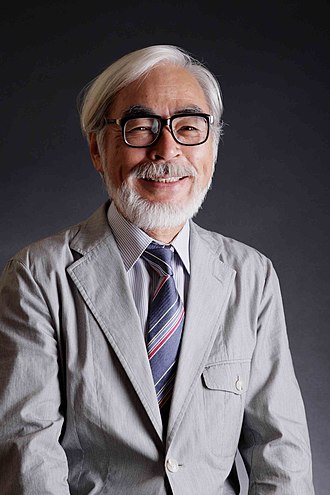
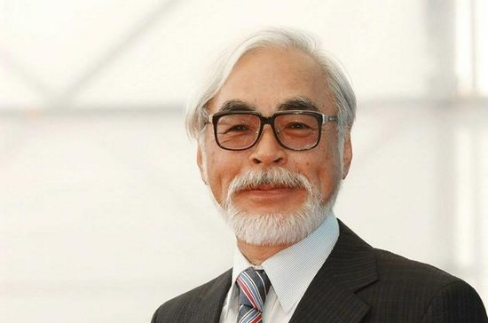
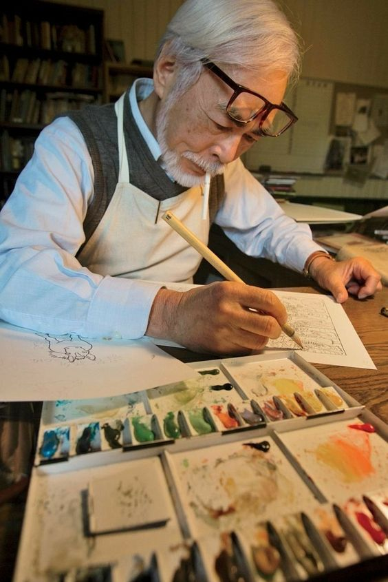
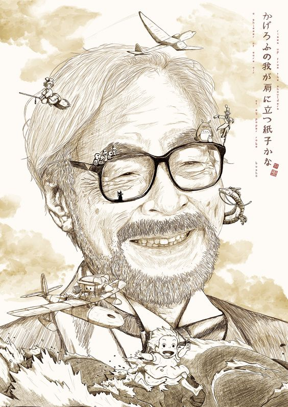

Studio Ghibli |
Intro Video
宫崎骏与高畑勋共同创立受到国际上广泛赞誉的动画工作室——吉卜力工作室。宫崎骏的作品获得相当大的成功，与美国动画师华特·迪士尼（Walt Disney）、英国动画师尼克·帕克以及动作捕捉先驱、美国动画师罗伯·湛米基斯相提并论，他也被《时代杂志》认为是最具影响力的人物。
宫崎骏在东映动画开始他的职业生涯，并参加《格列佛的宇宙旅行》的制作。他在这部作品中提出自己的想法，并最终成为电影的结局。他在动画产业以各种不同的角色参与工作，直到他在1979年执导第一部动画长片《鲁邦三世卡里奥斯特罗之城》。在他的下一部电影《风之谷》获得广泛的赞誉，他与高畑勋共同创立吉卜力工作室，并继续创作许多作品。直到完成《幽灵公主》之后，宫崎骏选择暂时退休。在休息一阵子之后，宫崎骏在2001年完成动画《千与千寻》。
虽然宫崎骏的电影在日本一直都享有巨大的商业及艺术上的成功，但是西方世界基本上对他的了解并不深；直到米拉麦克斯影业将他在1997年执导的电影《幽灵公主》以DVD的形式公开发行之后，他在西方世界的知名度才逐渐上升。《幽灵公主》上映当时是日本史上票房最高的电影，直到1997年另一部电影《泰坦尼克号》上映之后才超过它。《幽灵公主》也是第一部在日本电影金像奖赢得最佳影片奖的动画电影。他的下一部影片《千与千寻》在日本的票房超过《泰坦尼克号》，还赢得了日本电影金像奖最佳影片奖，也是第一部赢得奥斯卡最佳动画长片奖的日本动画。他执导的许多其他电影也获得许多不同的国际奖项。
一些主题在宫崎骏的电影中经常出现，例如人类对于自然及科技之间的关系，难以维持的和平主义伦理等。宫崎骏的女性主义思想经常反映在电影当中，所以电影中的主角往往是坚强且独立的女孩或年轻女性。但是对于自然，宫崎骏也说过：自然是很残忍的，会否定文化或文明，别以为努力环保就行了，很有可能会结果完全相反。
宫崎骏长年反核，2011年6月在工作室的外墙悬挂“吉卜力工作室不使用核电制作电影”（スタジオジブリは原発ぬきの電気で映画をつくりたい）的横幅标语。
2013年7月，宫崎骏在吉卜力工作室免费月刊《热风》2013年7月号表态反对修改《日本国宪法》，“现在举行选举的话，得票率、投票率也低，在这种情况下，政府想混水摸鱼、以‘想到哪、做到哪’的方式修宪，实在太扯了”；他批评，日本的政府和政党首脑缺乏历史观、没念书，他们只会听佞臣之言决定方针，结果他们在国际社会踢到铁板就立刻慌张地改口“基本上尊重村山谈话”；他说，对照《日本国宪法》第9条，自卫队的存在是有点怪，但那样比较好，最好不要变成国防军；他还说，安倍经济学迟早会破功。


宫崎骏的母亲十分爱好读书，并经常对社会产生质疑；而宫崎骏也是一个喜好读书的人，对手冢治虫、杉蒲茂的漫画很有兴趣，尤其最喜爱福岛铁次的绘本《沙漠的魔王》。因为母亲需要进行肺结核的治疗，所以宫崎骏全家经常搬家。
宫崎骏全家在1944年全家移居到栃木县的宇都宫市和鹿沼市，从1947年开始在宇都宫市的一所小学就读，4年级时回到东京，就读杉并区大宫小学，5年级时则转到由大宫小学新成立的支校永福小学。他在1953年从小学毕业，进入大宫中学就读，高中则进入都立丰多摩高中，并开始学习绘画。1958年因为东映动画《白蛇传》（日本第一部彩色动画长片）而开始对动画产生兴趣。1959年考入学习院大学政治经济系，主攻日本产业论。由于当时的大学还没有漫画社，因此加入性质最接近的儿童文学社(儿童文化研究会)" ，并编导了几出人偶剧。大学期间热衷创作漫画，累积了数千张画稿。在此时，宫崎骏也在思想上开始倾向社会主义，在苏联解体时，他的左派思想也受到很大冲击，宫崎骏在1994年连载完漫画《风之谷》后，决定放弃马克思主义。但是对劳动者和革命的肯定立场一直没变。
宫崎骏于东映动画公司认识了在他动画生涯中有着重要影响力的前辈高畑勋，在此期间参与了《狼少年肯》（是东映首部动画电视剧）、《太阳王子 霍尔斯的大冒险》（高畑勋执导）、《穿长靴的猫》（制作人为矢吹公郎，于1969年公映）等动画的制作，担任原画或场面设计的职务。
1978年于NHK播映的《未来少年柯南》为宫崎骏首度担任导演的电视动画作品，获得广泛的赞誉。随后宫崎骏在1979年加入东京电影新社，继续创作《鲁邦三世》电视动画系列。1979年12月，宫崎骏在东京电影新社创作《鲁邦三世卡里奥斯特罗之城》，这是他首次担任剧场版长篇动画的导演、脚本及分镜画脚本，并在制作的过程中结识了往后在创作、或是成立吉卜力工作室方面给予多项协助的伙伴铃木敏夫。
他从1980年开始为东京电影新社的电信公司培训新人。1981年8月《Animage》杂志编辑了宫崎骏特集，宫崎骏也从此开始与德间书店正式合作。1982年2月《Animage》杂志连载《风之谷》，他同时加入《侦探福尔摩斯》的制片工作。宫崎骏在该年11月退出东京电影新社。
在《风之谷》上映后，因先前的制作团队“Topcraft”解散，为了让宫崎骏及高畑勋能有一个专用的创作动画平台，铃木敏夫在德间书店出资帮助下于吉祥寺里成立了吉卜力工作室。
在吉卜力工作室成立后，宫崎骏首次在吉卜力完成的动画电影为1986年的《天空之城》，内容讲述了两个孤儿的冒险故事，他们试图寻找一个漂浮在天空中的神奇岛屿。1988年的《龙猫》则描述两个女孩与森林精灵之间的互动与冒险。1989年的《魔女宅急便》为改编自角野荣子的小说，剧情为一个离开故乡的小魔女在大城市生活的故事。宫崎骏在这些作品中展现出飞行的魅力，包括《天空之城》里空贼使用的扑翼机、《龙猫》中龙猫及猫巴士的飞行与《魔女宅急便》中魔女琪琪的飞行扫帚。
1992年的《红猪》以反映宫崎骏自身的想法而闻名，剧中的主角是一位变成猪的男性反法西斯主义飞行员。这部电影背景设定在1920年代的意大利，描述一位打击空贼的赏金猎人及一名美军士兵之间的故事。这部影片探讨了自私与责任之间的对立关系。这部影片也可以看作是宫崎骏的抽象自画像，剧中的台词可能暗示他的内心想法。就像他的许多其他电影一样，《红猪》拥有丰富的典故，并提到1930年代和40年代的美国电影。红猪在很多地方与美国演员亨弗莱·鲍嘉作品的场景相似。
1997年的《幽灵公主》回到生态及《风之谷》剧中的政治主题，故事情节集中于居住在森林里的动物之间的斗争及人类利用森林来扩展工业。《幽灵公主》与《风之谷》这两部影片含蓄地批评了人类对自然产生的不利影响，并将军队塑造成负面的形象。《幽灵公主》也被认为是他最暴力的电影之一，这部电影在日本获得巨大的商业成功，当时成为日本史上最卖座的电影，直到被《泰坦尼克号》超过为止；并最终在日本电影金像奖夺得最佳影片奖。宫崎骏在倾全力执导《幽灵公主》之后暂时性的退休。
《千与千寻》获得许多奖项，包括在2001年获得日本电影金像奖最佳影片奖、在2002年获得柏林电影节：金熊奖（史上首部获得该奖项的动画片）及2002年的奥斯卡金像奖：奥斯卡最佳动画片奖，第68届纽约影评人协会奖：最佳动画奖，是宫崎骏另一个辉煌成就。
《千与千寻》也是首部风行全世界的吉卜力动画电影，在美国与法国极受欢迎，相关产品亦为吉卜力带来十分丰厚利润，迪士尼也以钜资买下宫崎骏部分影片的DVD发行权。
宫崎骏在2004年7月完成《哈尔移动城堡》，电影改编自英国小说家戴安娜·韦恩·琼斯的奇幻小说。宫崎骏在原本导演细田守突然被撤换之后接掌担任导演。这部电影在2004年于威尼斯电影节首映并以动画技术获得金奥萨拉奖。《哈尔移动城堡》在2004年11月20日于日本上映，当年票房成绩为将近200亿日圆。美国迪士尼随后发行英文版本《哈尔移动城堡》。
宫崎骏在2005年获得了威尼斯电影节：荣誉金狮奖，第71届纽约影评人协会奖：《哈尔移动城堡》最佳动画奖。
中国媒体在同年报导，宫崎骏最新的电影将是《我失去了我的小男孩》，改编自一本中国童书，但这个消息后来被证明是误传。
宫崎骏的长子宫崎吾朗在2006年完成他的第一部电影《地海战记》，剧情改编自娥苏拉·勒瑰恩创作的几个故事。宫崎骏想要将《地海》改编成动画的念头已经出现很久，并一再要求取得原作者娥苏拉·勒瑰恩的同意，但是他每次都遭到拒绝。于是宫崎骏制作《风之谷》与《修那之旅》作为替代品（《修那之旅》当中的一些构想被转移到这部电影当中）。但是当勒瑰恩最后要求宫崎骏将她的作品改编成动画时，他拒绝这个请求，因为他已经失去这样做的欲望。
在整个《地海战记》影片的制作期间，宫崎吾朗与他的父亲之间并无任何交谈，这是因为他们对于宫崎吾朗是否准备好执导这部作品产生争议。这部影片最初是由宫崎骏来制作，但是因为他正在进行《哈尔移动城堡》的制作所以拒绝接任。吉卜力工作室决定让宫崎吾朗担任这部作品的导演，虽然他不曾制作过任何动画。
在2006年，美国Nausicaa.net网站报导宫崎骏执导另一部动画电影的计划，传闻背景设定在神户。在宫崎骏小组在制作之前造访一间由一对老夫妇经营的咖啡馆，并从山区俯瞰城市的景色。吉卜力工作室制作日记并未指出这些地区的确切位置。该工作室还宣布宫崎骏已经开始为电影制作故事板，他们使用水彩来制作，因此电影将拥有“不寻常的视觉风格”。吉卜力工作室表示这部动画电影制作时间约为20个月，预计于2008年夏季上映。
这部电影的名称在2007年公开宣布为《悬崖上的金鱼公主》。故事围绕一个5岁的男孩宗介与想要成为人类的金鱼公主“波妞”，宫崎骏说这个想法是从丹麦作家安徒生的著名童话故事《美人鱼》得到的灵感 。吉卜力工作室的铃木敏夫指出，“70至80％的剧情发生在海上，如何表达使用手绘动画来呈现大海及海浪将是导演的挑战”。 《悬崖上的金鱼公主》获得了威尼斯电影节Mimmo Rotella财团奖，第32届日本电影金像奖：最佳动画片奖。
2008年年底，宫崎骏提出了“吉卜力5年经营计划”（スタジオジブリ経営5カ年計画），内容预定是前3年采用年轻的人才发表2部动画、最后2年则预定推出重量级的作品。之后宫崎骏则依序在2010年由米林宏昌执导的《借东西的小人阿莉埃蒂》（玛丽·诺顿原著）；以及2011年宫崎吾朗第二部执导作品《来自虞美人之坡》（佐山哲郎、高桥千鹤原著）中担任剧本。
2013年，推出《起风了》。9月1日，吉卜力公司在威尼斯电影节中宣布，宫崎骏在此部电影结束后引退，不再执导长篇电影作品，《起风了》成为他的息影之作。
9月6日，宫崎骏在东京召开的记者会中，证实这个消息。
2013年《起风了》获得了美国国家评论会奖，第79届纽约影评人协会奖，第34届波士顿影评人协会奖，第18届圣地亚哥影评人协会奖，第17届多伦多影评人协会奖：最佳动画长片奖。第36届米尔谷国际影展：最受欢迎动画作品奖。2014年安妮奖：最佳编剧奖。
2016年11月14日，宫崎骏在NHK的特别节目“终わらない人 宫﨑骏”之中透露自己复出的消息，并希望在2019年之内完成新的长篇动画，此次是为第七次复出。
吉卜力工作室在2005年4月脱离德间书店，成为独立公司，并由铃木敏夫出任总经理，宫崎骏与史蒂夫·艾伯特（Steve Alpert）出任董事。宫崎骏作品的版权及所有权也移转至吉卜力工作室。[26]关于吉卜力，宫崎骏曾在纪录片《梦与狂想的王国》中说到：“吉卜力是我从一架飞机的名字随便取来的。它只是个名字而已。”。他还说到：“未来很明确，吉卜力会解散的。这是不可避免的。”。

不喜爱好莱坞电影中非白即黑的善恶二分法，也曾批评过电影《夺宝奇兵》及小说《指环王》里头非我方即杀无赦、白人至上主义的风格。
宫崎吾朗曾提及宫崎骏的印象：“他是一百分的导演，却是个零分的爸爸。”

2004年11月20日宫崎骏推出了改编自英国作家戴安娜·温尼·琼斯同名著作的《哈尔的移动城堡》，该片原先计划邀请细田守执导，但因细田守过去所经历的东映动画体系行事风格与吉卜力不合，而使得该计划取消。《哈尔的移动城堡》的票房成绩有逼近200亿日圆，在由新海诚所执导的2016年动画《你的名字。》出现之前，曾一度是次于《神隐少女》的日本最卖座动画作品第二名。
吉卜力在2005年3月期间正式从德间书店集团下拆分出来，成为独立的公司“株式会社吉卜力工作室”（株式会社スタジオジブリ），新社长的人选是由铃木敏夫出面担任。
2006年夏季吉卜力推出由宫崎骏长子宫崎吾朗首次担任导演的电影动画《地海战记》，该作品改编自美国作家厄休拉·勒古恩著作《地海》系列，为宫崎骏个人最爱好的小说之一。宫崎吾朗最初是将《地海》改编成动画一事的企划案讨论成员之一，之后铃木敏夫考量可以试试让吾朗担任导演，而宫崎骏曾对此决策向铃木敏夫表达不满。此片上映后获得不低的76亿多日圆票房，但有引来褒贬不一的反应。
到了2008年2月，过去在迪士尼日本分公司任职、与吉卜力有多次往来的星野康二接任了铃木敏夫的位子，成为吉卜力的新社长。同年7月19日宫崎骏推出《崖上的波妞》，在该部片中他完全以手绘的方式来表达片中海浪拍打的动态，其画面表现深受铃木敏夫高度肯定，成绩上也成为宫崎骏另一部票房破百亿日圆的作品。
《崖上的波妞》上映的当年年底，宫崎骏提出了“吉卜力5年经营计划”（スタジオジブリ経営5カ年計画）的构想，预定先在2009至2011年的3年期间推出由年轻人员制作的动画，之后2012到2013年的2年里推出重量级作品。之后宫崎骏与铃木敏夫挑选了吉卜力的年轻动画师米林宏昌来担任导演，让他执导基于英国作家玛丽·诺顿著作《地板下的小矮人》所改编的《借东西的小人阿莉埃蒂》。该片在2010年10月17日公开后，票房成绩有达到逼近百亿的92亿多日圆，为当年日本国产电影票房榜首。
吉卜力5年经营计划的第二部年轻人作品是由宫崎吾朗执导的《红花坂上的海》，该部是改编由佐山哲郎、高桥千鹤共同创作的少女漫画，也是宫崎骏个人喜爱的漫画作品之一。此部票房上虽不如吾朗首部作品《地海战记》亮眼，但仍为当年最卖座的日本国产电影。

宫崎骏跟法国作家与漫画家墨比斯相互影响对方的作品，他们也因为钦佩对方的作品而成为朋友。巴黎铸币博物馆从2004年12月至2005年4月之间曾经举办他们作品的展览，两位艺术家也出席了展览的开幕仪式。墨比斯也以宫崎骏的动画作品《风之谷》女主角娜乌西卡来替他的女儿取名。
宫崎骏也深深受到另一家法国作家圣修伯里的影响。他为圣修伯里的著作《夜间飞行》（Vol de nuit）及《风沙星辰》（Terre des Hommes）日语版绘上插画，并为《风沙星辰》写了一篇后记。
英国广播公司选择频道（BBC Choice）在2002年6月10日采访宫崎骏时，他提出英国作家埃莉诺·法杰恩（Eleanor Farjeon）、沙特克里夫（Rosemary Sutcliff）及菲利帕·皮尔斯（Philippa Pearce）都对他产生影响。宫崎骏也公开表示他喜欢罗尔德·达尔那些关于飞行员与飞机的故事，在《红猪》的故事中那些出现在云层上的死亡飞行员的灵感也来自于达尔的《They Shall Not Grow Old》。
在宫崎骏的电影中，呈现出这些作家所创造的自给自足世界，并通常隐含着寓言性质，并具有复杂的角色。宫崎峻其他的作品，例如《龙猫》、《幽灵公主》与《千与千寻》，都包括日本的历史及神话元素。
宫崎骏说他受到1958年《白蛇传》（被认为是日本第一部彩色长篇动画电影）刺激，因此立志成为一位动画师。他还表示，苏联的动画电影《雪之女王》（Снежная королева）是他早期的一个灵感来源，并促使他继续制作动画。
俄罗斯著名动画师尤里·诺里斯金是宫崎骏的朋友，并称赞他是一位“伟大的艺术家”。诺里斯金在1975年的动画《雾中的刺猬》（Ёжик в тумане）是宫崎骏最喜欢的动画片之一。
宫崎骏长期以来都是阿德曼工作室（Aardman Animations）动画的影迷。阿德曼工作室的创办人大卫·斯普罗克斯顿（David Sproxton）与彼德·罗德（Peter Lord）在2006年5月参观吉卜力美术馆对于他们作品的展览，他们也在那里与宫崎骏会面。
美国《时代杂志》在2003年4月10日发表“亚洲英雄二十人”，宫崎骏与著名棒球运动员松井秀喜是唯二上榜的日本人。
宫崎骏在日本动画界占有超重量级的地位，台湾动漫画评论团体傻呼噜同盟所著的《日本动画五天王》中，将他与富野由悠季、庵野秀明、押井守、大友克洋并称为日本动画五大天王。
宫崎骏在英国《卫报》选出的当代40大杰出导演中名列第8位，而美国电影评论家罗杰·艾伯特则认为宫崎骏是世界上最杰出的动画导演。日本作家上岛春彦认为宫崎骏是一位伟大的动画师，并认为没有任何一位日本导演对于世界电影造成的影响比宫崎骏更大。
1990年：东京都民文化荣誉章
1994年：日本漫画家协会奖（Japan Manga Artists' Association Award）
1998年：第26届安妮奖：生涯贡献奖、山路文子文化奖、淀川长治奖
2000年：第3届司马辽太郎奖
2001年：第49届菊池宽奖、每日电影奖最佳导演
2002年：朝日奖、法国国家功劳奖、巴黎市勋章、商业周刊亚洲之星（创新部门）、第30回安妮奖：导演奖.剧本奖
2003年：埼玉县荣誉市民、《时代》杂志亚洲版评列为“亚洲英雄人物20人”之一
2004年：第61届威尼斯电影节：金奥萨拉奖、第16届萨格勒布国际动画片盛会贡献奖、加泰罗尼亚国际电影节：特别审查员奖
2005年：第62届威尼斯电影节：荣誉金狮奖、国际交流基金奖、《时代》杂志评列“世界最具影响力100人”之一
2006年：《时代》杂志亚洲版评列“60年间的亚洲英雄人物”之一
2007年：英国电影杂志《Total Film》史上百位伟大导演：第25名
2008年：小金井市荣誉市民
2009年：第二届柏克莱日本奖、杂志《Fast Company》评列为“商业界里最具创意的100人”第31名
2010年：三鹰市荣誉市民
2012年：日本“文化功劳者”称号
2014年：第41届安妮奖：最佳编剧、 第87届奥斯卡荣誉奖项“主席奖”(Governors Awards)
Studio Ghibli | Intro Video
宫崎骏 Miyazaki Hayao
简介
宫崎骏基本上以本名活动，不论日本国内外，普遍习惯用宮崎駿，2000年以后才逐渐正名宮﨑駿。曾经使用的化名包括秋津三朗（あきつ さぶろう）与照樹務（てれこむ）。另外，在漫画作品《起风了 妄想重返》连载时的笔名则有宮﨑グズオ、宮﨑ノロオ、宮﨑ノビオ、宮﨑オソオ、宮﨑YASUMIGACHI駿、妄想駿及宮﨑妄想。宫崎骏与高畑勋共同创立受到国际上广泛赞誉的动画工作室——吉卜力工作室。宫崎骏的作品获得相当大的成功，与美国动画师华特·迪士尼（Walt Disney）、英国动画师尼克·帕克以及动作捕捉先驱、美国动画师罗伯·湛米基斯相提并论，他也被《时代杂志》认为是最具影响力的人物。
宫崎骏在东映动画开始他的职业生涯，并参加《格列佛的宇宙旅行》的制作。他在这部作品中提出自己的想法，并最终成为电影的结局。他在动画产业以各种不同的角色参与工作，直到他在1979年执导第一部动画长片《鲁邦三世卡里奥斯特罗之城》。在他的下一部电影《风之谷》获得广泛的赞誉，他与高畑勋共同创立吉卜力工作室，并继续创作许多作品。直到完成《幽灵公主》之后，宫崎骏选择暂时退休。在休息一阵子之后，宫崎骏在2001年完成动画《千与千寻》。
虽然宫崎骏的电影在日本一直都享有巨大的商业及艺术上的成功，但是西方世界基本上对他的了解并不深；直到米拉麦克斯影业将他在1997年执导的电影《幽灵公主》以DVD的形式公开发行之后，他在西方世界的知名度才逐渐上升。《幽灵公主》上映当时是日本史上票房最高的电影，直到1997年另一部电影《泰坦尼克号》上映之后才超过它。《幽灵公主》也是第一部在日本电影金像奖赢得最佳影片奖的动画电影。他的下一部影片《千与千寻》在日本的票房超过《泰坦尼克号》，还赢得了日本电影金像奖最佳影片奖，也是第一部赢得奥斯卡最佳动画长片奖的日本动画。他执导的许多其他电影也获得许多不同的国际奖项。
一些主题在宫崎骏的电影中经常出现，例如人类对于自然及科技之间的关系，难以维持的和平主义伦理等。宫崎骏的女性主义思想经常反映在电影当中，所以电影中的主角往往是坚强且独立的女孩或年轻女性。但是对于自然，宫崎骏也说过：自然是很残忍的，会否定文化或文明，别以为努力环保就行了，很有可能会结果完全相反。
宫崎骏长年反核，2011年6月在工作室的外墙悬挂“吉卜力工作室不使用核电制作电影”（スタジオジブリは原発ぬきの電気で映画をつくりたい）的横幅标语。
2013年7月，宫崎骏在吉卜力工作室免费月刊《热风》2013年7月号表态反对修改《日本国宪法》，“现在举行选举的话，得票率、投票率也低，在这种情况下，政府想混水摸鱼、以‘想到哪、做到哪’的方式修宪，实在太扯了”；他批评，日本的政府和政党首脑缺乏历史观、没念书，他们只会听佞臣之言决定方针，结果他们在国际社会踢到铁板就立刻慌张地改口“基本上尊重村山谈话”；他说，对照《日本国宪法》第9条，自卫队的存在是有点怪，但那样比较好，最好不要变成国防军；他还说，安倍经济学迟早会破功。
生平
早年
宫崎骏在1941年1月5日出生于东京都文京区，在四个兄弟中排名第二，父亲是宫崎家族经营的“宫崎航空兴学”的职员。直到1945年第二次世界大战结束为止，宫崎骏度过了相当自由的幼年生活。由于身体不好，故不擅长运动，也因此对静态的绘画很有天分，特别对于飞机感到兴趣，并成为终身的爱好，他后来许多作品当中都反复出现飞行的概念。宫崎骏的母亲十分爱好读书，并经常对社会产生质疑；而宫崎骏也是一个喜好读书的人，对手冢治虫、杉蒲茂的漫画很有兴趣，尤其最喜爱福岛铁次的绘本《沙漠的魔王》。因为母亲需要进行肺结核的治疗，所以宫崎骏全家经常搬家。
宫崎骏全家在1944年全家移居到栃木县的宇都宫市和鹿沼市，从1947年开始在宇都宫市的一所小学就读，4年级时回到东京，就读杉并区大宫小学，5年级时则转到由大宫小学新成立的支校永福小学。他在1953年从小学毕业，进入大宫中学就读，高中则进入都立丰多摩高中，并开始学习绘画。1958年因为东映动画《白蛇传》（日本第一部彩色动画长片）而开始对动画产生兴趣。1959年考入学习院大学政治经济系，主攻日本产业论。由于当时的大学还没有漫画社，因此加入性质最接近的儿童文学社(儿童文化研究会)" ，并编导了几出人偶剧。大学期间热衷创作漫画，累积了数千张画稿。在此时，宫崎骏也在思想上开始倾向社会主义，在苏联解体时，他的左派思想也受到很大冲击，宫崎骏在1994年连载完漫画《风之谷》后，决定放弃马克思主义。但是对劳动者和革命的肯定立场一直没变。
东映动画公司
在大学毕业后，宫崎骏于1963年4月进入东映动画公司，从事动画师的工作。进入公司一年后，受苏联制作的长篇动画《雪之女王》深深感动，因此决定以动画师为一生的职志。成为动画师后第一次参与制作的动画是《汪汪忠臣藏》（制作人为白川大作），其不凡的才能被发现后，升职为主要制作人，并担任了东映动画的公会书记长。宫崎骏于东映动画公司认识了在他动画生涯中有着重要影响力的前辈高畑勋，在此期间参与了《狼少年肯》（是东映首部动画电视剧）、《太阳王子 霍尔斯的大冒险》（高畑勋执导）、《穿长靴的猫》（制作人为矢吹公郎，于1969年公映）等动画的制作，担任原画或场面设计的职务。
离开东映动画公司
宫崎骏在1971年完成《阿里巴巴和四十大盗》后离开东映动画公司，与高畑勋、小田部羊一共同加入A Production（现今的SHIN-EI动画公司）。在新企划《长袜子皮皮》的筹备期间，宫崎骏第一次出国，来到瑞典取景并与作者阿斯特丽德·林格伦会面，但是林格伦拒绝授权来动画制作，于是这个企划案最终遭到取消。宫崎骏之后一直与高畑勋等人合作企划，完成了《鲁邦三世》、《熊猫家族》、《阿尔卑斯山的少女》及《三千里寻母记》等作品。1978年于NHK播映的《未来少年柯南》为宫崎骏首度担任导演的电视动画作品，获得广泛的赞誉。随后宫崎骏在1979年加入东京电影新社，继续创作《鲁邦三世》电视动画系列。1979年12月，宫崎骏在东京电影新社创作《鲁邦三世卡里奥斯特罗之城》，这是他首次担任剧场版长篇动画的导演、脚本及分镜画脚本，并在制作的过程中结识了往后在创作、或是成立吉卜力工作室方面给予多项协助的伙伴铃木敏夫。
他从1980年开始为东京电影新社的电信公司培训新人。1981年8月《Animage》杂志编辑了宫崎骏特集，宫崎骏也从此开始与德间书店正式合作。1982年2月《Animage》杂志连载《风之谷》，他同时加入《侦探福尔摩斯》的制片工作。宫崎骏在该年11月退出东京电影新社。
吉卜力工作室
1985至1999期间
他与妻子太田朱美在1984年4月创立了个人事务所“二马力”负责管理作品的版权，而好友兼伙伴高畑勋当时也有个人的“畑事务所”。在《风之谷》上映后，因先前的制作团队“Topcraft”解散，为了让宫崎骏及高畑勋能有一个专用的创作动画平台，铃木敏夫在德间书店出资帮助下于吉祥寺里成立了吉卜力工作室。
在吉卜力工作室成立后，宫崎骏首次在吉卜力完成的动画电影为1986年的《天空之城》，内容讲述了两个孤儿的冒险故事，他们试图寻找一个漂浮在天空中的神奇岛屿。1988年的《龙猫》则描述两个女孩与森林精灵之间的互动与冒险。1989年的《魔女宅急便》为改编自角野荣子的小说，剧情为一个离开故乡的小魔女在大城市生活的故事。宫崎骏在这些作品中展现出飞行的魅力，包括《天空之城》里空贼使用的扑翼机、《龙猫》中龙猫及猫巴士的飞行与《魔女宅急便》中魔女琪琪的飞行扫帚。
1992年的《红猪》以反映宫崎骏自身的想法而闻名，剧中的主角是一位变成猪的男性反法西斯主义飞行员。这部电影背景设定在1920年代的意大利，描述一位打击空贼的赏金猎人及一名美军士兵之间的故事。这部影片探讨了自私与责任之间的对立关系。这部影片也可以看作是宫崎骏的抽象自画像，剧中的台词可能暗示他的内心想法。就像他的许多其他电影一样，《红猪》拥有丰富的典故，并提到1930年代和40年代的美国电影。红猪在很多地方与美国演员亨弗莱·鲍嘉作品的场景相似。
1997年的《幽灵公主》回到生态及《风之谷》剧中的政治主题，故事情节集中于居住在森林里的动物之间的斗争及人类利用森林来扩展工业。《幽灵公主》与《风之谷》这两部影片含蓄地批评了人类对自然产生的不利影响，并将军队塑造成负面的形象。《幽灵公主》也被认为是他最暴力的电影之一，这部电影在日本获得巨大的商业成功，当时成为日本史上最卖座的电影，直到被《泰坦尼克号》超过为止；并最终在日本电影金像奖夺得最佳影片奖。宫崎骏在倾全力执导《幽灵公主》之后暂时性的退休。
2000至今期间
在这段半退休的时期，宫崎骏结识了在日本电视台朋友奥田诚治的女儿，后来成为他创作《千与千寻》主角荻野千寻的模特儿。《千与千寻》的故事主角是一个女孩，被迫在一个奇怪的精灵世界生存下去，因为她的父母被变成猪，所以她只好在澡堂工作。《千与千寻》于2001年7月在日本上映，并打破了日本的票房记录（304亿日圆），超过2300万人次进场观看，也再次超越先前被《泰坦尼克号》占据的日本最卖座电影的首位。《千与千寻》获得许多奖项，包括在2001年获得日本电影金像奖最佳影片奖、在2002年获得柏林电影节：金熊奖（史上首部获得该奖项的动画片）及2002年的奥斯卡金像奖：奥斯卡最佳动画片奖，第68届纽约影评人协会奖：最佳动画奖，是宫崎骏另一个辉煌成就。
《千与千寻》也是首部风行全世界的吉卜力动画电影，在美国与法国极受欢迎，相关产品亦为吉卜力带来十分丰厚利润，迪士尼也以钜资买下宫崎骏部分影片的DVD发行权。
宫崎骏在2004年7月完成《哈尔移动城堡》，电影改编自英国小说家戴安娜·韦恩·琼斯的奇幻小说。宫崎骏在原本导演细田守突然被撤换之后接掌担任导演。这部电影在2004年于威尼斯电影节首映并以动画技术获得金奥萨拉奖。《哈尔移动城堡》在2004年11月20日于日本上映，当年票房成绩为将近200亿日圆。美国迪士尼随后发行英文版本《哈尔移动城堡》。
宫崎骏在2005年获得了威尼斯电影节：荣誉金狮奖，第71届纽约影评人协会奖：《哈尔移动城堡》最佳动画奖。
中国媒体在同年报导，宫崎骏最新的电影将是《我失去了我的小男孩》，改编自一本中国童书，但这个消息后来被证明是误传。
宫崎骏的长子宫崎吾朗在2006年完成他的第一部电影《地海战记》，剧情改编自娥苏拉·勒瑰恩创作的几个故事。宫崎骏想要将《地海》改编成动画的念头已经出现很久，并一再要求取得原作者娥苏拉·勒瑰恩的同意，但是他每次都遭到拒绝。于是宫崎骏制作《风之谷》与《修那之旅》作为替代品（《修那之旅》当中的一些构想被转移到这部电影当中）。但是当勒瑰恩最后要求宫崎骏将她的作品改编成动画时，他拒绝这个请求，因为他已经失去这样做的欲望。
在整个《地海战记》影片的制作期间，宫崎吾朗与他的父亲之间并无任何交谈，这是因为他们对于宫崎吾朗是否准备好执导这部作品产生争议。这部影片最初是由宫崎骏来制作，但是因为他正在进行《哈尔移动城堡》的制作所以拒绝接任。吉卜力工作室决定让宫崎吾朗担任这部作品的导演，虽然他不曾制作过任何动画。
在2006年，美国Nausicaa.net网站报导宫崎骏执导另一部动画电影的计划，传闻背景设定在神户。在宫崎骏小组在制作之前造访一间由一对老夫妇经营的咖啡馆，并从山区俯瞰城市的景色。吉卜力工作室制作日记并未指出这些地区的确切位置。该工作室还宣布宫崎骏已经开始为电影制作故事板，他们使用水彩来制作，因此电影将拥有“不寻常的视觉风格”。吉卜力工作室表示这部动画电影制作时间约为20个月，预计于2008年夏季上映。
这部电影的名称在2007年公开宣布为《悬崖上的金鱼公主》。故事围绕一个5岁的男孩宗介与想要成为人类的金鱼公主“波妞”，宫崎骏说这个想法是从丹麦作家安徒生的著名童话故事《美人鱼》得到的灵感 。吉卜力工作室的铃木敏夫指出，“70至80％的剧情发生在海上，如何表达使用手绘动画来呈现大海及海浪将是导演的挑战”。 《悬崖上的金鱼公主》获得了威尼斯电影节Mimmo Rotella财团奖，第32届日本电影金像奖：最佳动画片奖。
2008年年底，宫崎骏提出了“吉卜力5年经营计划”（スタジオジブリ経営5カ年計画），内容预定是前3年采用年轻的人才发表2部动画、最后2年则预定推出重量级的作品。之后宫崎骏则依序在2010年由米林宏昌执导的《借东西的小人阿莉埃蒂》（玛丽·诺顿原著）；以及2011年宫崎吾朗第二部执导作品《来自虞美人之坡》（佐山哲郎、高桥千鹤原著）中担任剧本。
2013年，推出《起风了》。9月1日，吉卜力公司在威尼斯电影节中宣布，宫崎骏在此部电影结束后引退，不再执导长篇电影作品，《起风了》成为他的息影之作。
9月6日，宫崎骏在东京召开的记者会中，证实这个消息。
2013年《起风了》获得了美国国家评论会奖，第79届纽约影评人协会奖，第34届波士顿影评人协会奖，第18届圣地亚哥影评人协会奖，第17届多伦多影评人协会奖：最佳动画长片奖。第36届米尔谷国际影展：最受欢迎动画作品奖。2014年安妮奖：最佳编剧奖。
2016年11月14日，宫崎骏在NHK的特别节目“终わらない人 宫﨑骏”之中透露自己复出的消息，并希望在2019年之内完成新的长篇动画，此次是为第七次复出。
其它
在吉卜力工作室期间，宫崎骏除创作动画外，另打造了个人心中理想的美术馆－三鹰之森吉卜力美术馆。三鹰之森吉卜力美术馆在2001年10月1日正式开幕，馆中曾举行过许多动画展览。吉卜力工作室在2005年4月脱离德间书店，成为独立公司，并由铃木敏夫出任总经理，宫崎骏与史蒂夫·艾伯特（Steve Alpert）出任董事。宫崎骏作品的版权及所有权也移转至吉卜力工作室。[26]关于吉卜力，宫崎骏曾在纪录片《梦与狂想的王国》中说到：“吉卜力是我从一架飞机的名字随便取来的。它只是个名字而已。”。他还说到：“未来很明确，吉卜力会解散的。这是不可避免的。”。
个人风格
宫崎骏的动画电影大多涉及人类与自然之间的关系、和平主义及女权运动。他的作品也经常出现飞行、儿童心理及青春期的思想。 剧情创作上，不常将脚本、结局一次写好，多采用一边制作、一边决定剧情下一步内容的即兴方式。
不喜爱好莱坞电影中非白即黑的善恶二分法，也曾批评过电影《夺宝奇兵》及小说《指环王》里头非我方即杀无赦、白人至上主义的风格。
宫崎吾朗曾提及宫崎骏的印象：“他是一百分的导演，却是个零分的爸爸。”
动画创作过程
吉卜力过去在1999年曾收到一间主题乐园的请求专案，希望能制作约20分钟长、以猫咪为主题的短片，当时宫崎骏有提出让《梦幻街少女》中出现的猫男爵（バロン）等角色出现在该短片里相关建议。后续该专案虽被对方取消，不过有被顺势当成测试工作室里年轻成员表现的机会。之后铃木敏夫相中了森田宏幸来进行挑战，所完成的作品为2002年7月19日上映的《猫的报恩》，并被视为是《梦幻街少女》的姊妹作。该片的长度约70多分钟，有一同与另名吉卜力原画师百濑义行执导的短篇动画《Ghiblies episode2》一同上映，之后有获得60多亿日圆票房以及当年度最卖座国产电影成绩。
2004年11月20日宫崎骏推出了改编自英国作家戴安娜·温尼·琼斯同名著作的《哈尔的移动城堡》，该片原先计划邀请细田守执导，但因细田守过去所经历的东映动画体系行事风格与吉卜力不合，而使得该计划取消。《哈尔的移动城堡》的票房成绩有逼近200亿日圆，在由新海诚所执导的2016年动画《你的名字。》出现之前，曾一度是次于《神隐少女》的日本最卖座动画作品第二名。
吉卜力在2005年3月期间正式从德间书店集团下拆分出来，成为独立的公司“株式会社吉卜力工作室”（株式会社スタジオジブリ），新社长的人选是由铃木敏夫出面担任。
2006年夏季吉卜力推出由宫崎骏长子宫崎吾朗首次担任导演的电影动画《地海战记》，该作品改编自美国作家厄休拉·勒古恩著作《地海》系列，为宫崎骏个人最爱好的小说之一。宫崎吾朗最初是将《地海》改编成动画一事的企划案讨论成员之一，之后铃木敏夫考量可以试试让吾朗担任导演，而宫崎骏曾对此决策向铃木敏夫表达不满。此片上映后获得不低的76亿多日圆票房，但有引来褒贬不一的反应。
到了2008年2月，过去在迪士尼日本分公司任职、与吉卜力有多次往来的星野康二接任了铃木敏夫的位子，成为吉卜力的新社长。同年7月19日宫崎骏推出《崖上的波妞》，在该部片中他完全以手绘的方式来表达片中海浪拍打的动态，其画面表现深受铃木敏夫高度肯定，成绩上也成为宫崎骏另一部票房破百亿日圆的作品。
《崖上的波妞》上映的当年年底，宫崎骏提出了“吉卜力5年经营计划”（スタジオジブリ経営5カ年計画）的构想，预定先在2009至2011年的3年期间推出由年轻人员制作的动画，之后2012到2013年的2年里推出重量级作品。之后宫崎骏与铃木敏夫挑选了吉卜力的年轻动画师米林宏昌来担任导演，让他执导基于英国作家玛丽·诺顿著作《地板下的小矮人》所改编的《借东西的小人阿莉埃蒂》。该片在2010年10月17日公开后，票房成绩有达到逼近百亿的92亿多日圆，为当年日本国产电影票房榜首。
吉卜力5年经营计划的第二部年轻人作品是由宫崎吾朗执导的《红花坂上的海》，该部是改编由佐山哲郎、高桥千鹤共同创作的少女漫画，也是宫崎骏个人喜爱的漫画作品之一。此部票房上虽不如吾朗首部作品《地海战记》亮眼，但仍为当年最卖座的日本国产电影。
影响与评价
宫崎骏的作品受到一些西方作家的影响，包括娥苏拉·勒瑰恩、路易斯·卡罗和戴安娜·韦恩·琼斯。宫崎骏私下表示勒瑰恩的《地海》系列对于他所有的作品产生很大的影响，他一直将她的书放置在床边。宫崎骏后续与娥苏拉·勒瑰恩见面时，更声称从《风之谷》开始所有的作品都受到《地海》系列的影响。
宫崎骏跟法国作家与漫画家墨比斯相互影响对方的作品，他们也因为钦佩对方的作品而成为朋友。巴黎铸币博物馆从2004年12月至2005年4月之间曾经举办他们作品的展览，两位艺术家也出席了展览的开幕仪式。墨比斯也以宫崎骏的动画作品《风之谷》女主角娜乌西卡来替他的女儿取名。
宫崎骏也深深受到另一家法国作家圣修伯里的影响。他为圣修伯里的著作《夜间飞行》（Vol de nuit）及《风沙星辰》（Terre des Hommes）日语版绘上插画，并为《风沙星辰》写了一篇后记。
英国广播公司选择频道（BBC Choice）在2002年6月10日采访宫崎骏时，他提出英国作家埃莉诺·法杰恩（Eleanor Farjeon）、沙特克里夫（Rosemary Sutcliff）及菲利帕·皮尔斯（Philippa Pearce）都对他产生影响。宫崎骏也公开表示他喜欢罗尔德·达尔那些关于飞行员与飞机的故事，在《红猪》的故事中那些出现在云层上的死亡飞行员的灵感也来自于达尔的《They Shall Not Grow Old》。
在宫崎骏的电影中，呈现出这些作家所创造的自给自足世界，并通常隐含着寓言性质，并具有复杂的角色。宫崎峻其他的作品，例如《龙猫》、《幽灵公主》与《千与千寻》，都包括日本的历史及神话元素。
宫崎骏说他受到1958年《白蛇传》（被认为是日本第一部彩色长篇动画电影）刺激，因此立志成为一位动画师。他还表示，苏联的动画电影《雪之女王》（Снежная королева）是他早期的一个灵感来源，并促使他继续制作动画。
俄罗斯著名动画师尤里·诺里斯金是宫崎骏的朋友，并称赞他是一位“伟大的艺术家”。诺里斯金在1975年的动画《雾中的刺猬》（Ёжик в тумане）是宫崎骏最喜欢的动画片之一。
宫崎骏长期以来都是阿德曼工作室（Aardman Animations）动画的影迷。阿德曼工作室的创办人大卫·斯普罗克斯顿（David Sproxton）与彼德·罗德（Peter Lord）在2006年5月参观吉卜力美术馆对于他们作品的展览，他们也在那里与宫崎骏会面。
美国《时代杂志》在2003年4月10日发表“亚洲英雄二十人”，宫崎骏与著名棒球运动员松井秀喜是唯二上榜的日本人。
宫崎骏在日本动画界占有超重量级的地位，台湾动漫画评论团体傻呼噜同盟所著的《日本动画五天王》中，将他与富野由悠季、庵野秀明、押井守、大友克洋并称为日本动画五大天王。
宫崎骏在英国《卫报》选出的当代40大杰出导演中名列第8位，而美国电影评论家罗杰·艾伯特则认为宫崎骏是世界上最杰出的动画导演。日本作家上岛春彦认为宫崎骏是一位伟大的动画师，并认为没有任何一位日本导演对于世界电影造成的影响比宫崎骏更大。
个人荣誉
Studio Ghibli | Intro Video